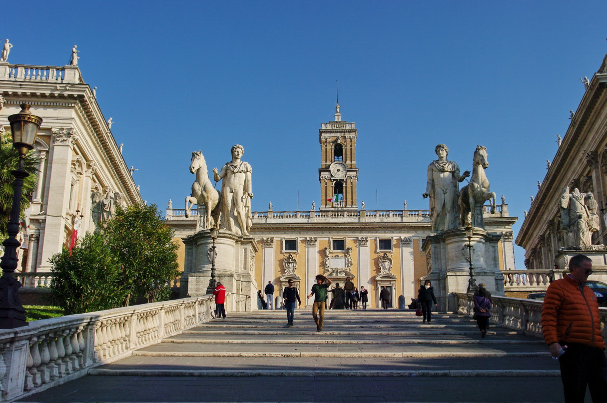
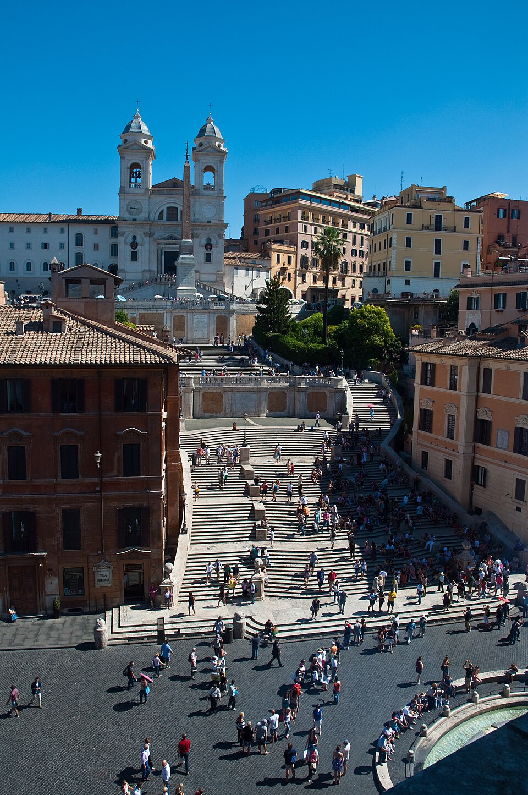

Rzym
Paryż Nowy Jork Rzym

stolica i największe miasto Włoch, położone w środkowej części kraju nad rzeką Tyber i Morzem Śródziemnym, zarazem stolica regionu administracyjno-historycznego Lacjum. Centrum administracyjne (wł. comune speciale) ma powierzchnię 1287 km² i liczbę ludności 2 825 661[2], będąc trzecim co do wielkości miastem Unii Europejskiej. Miasto Stołeczne Rzym ma 4 331 856 mieszkańców[3]. Rzym od starożytności znany jest jako Wieczne Miasto (łac. Roma Aeterna), a także „stolica świata” (łac. caput mundi – dosłownie „głowa świata”)[4]. Rzym jest metropolią o znaczeniu globalnym[5][6], a także dużym węzłem komunikacyjnym z jednym z największych międzynarodowych portów lotniczych w Europie, który obsługuje ponad 38 milionów pasażerów rocznie, rozbudowaną siecią autostrad i linii kolei dużych prędkości. Światowy ośrodek turystyczny z bardzo bogatymi zabytkami starożytności i średniowiecza (kościoły, bazyliki, Koloseum, pałace, akwedukty, fontanny i wiele innych budowli), niezwykle bogate muzea, nowoczesne osiedla mieszkaniowe na przedmieściach. W 1960 roku organizował Letnie Igrzyska Olimpijskie. W 2017 roku Rzym odwiedziło 9,5 mln turystów w ciągu roku[7]. Znajdują się tu siedziby dwóch organizacji ONZ: organizacji do spraw Wyżywienia i Rolnictwa oraz Międzynarodowego Funduszu Rozwoju Rolnictwa. W granicach Rzymu, na prawym brzegu Tybru, leży miasto-państwo Watykan (łac. Status Civitatis Vaticanæ), będący enklawą na terytorium państwowym Włoch.

Bazylika Sw. Jana
Bazylika św. Jana na Lateranie, jej pełna nazwa to: Papieska Arcybazylika Najświętszego Zbawiciela, św. Jana Chrzciciela i św. Jana Ewangelisty na Lateranie. Matka i Głowa Wszystkich Kościołów Miasta i Świata (wł. Arcibasilica Papale del SS.mo Salvatore e dei Santi Giovanni Battista ed Evangelista al Laterano; łac. Archibasilica Sanctissimi Salvatoris et Sanctorum Iohannes Baptista et Evangelista in Laterano. Omnium Ecclesiarum Urbi et Orbi Mater et Caput) – katedra biskupa Rzymu, należy do czterech bazylik większych, jedna z bazylik papieskich (dawniej patriarchalnych). Fasada głównego wejścia do bazyliki została zaprojektowana w XVIII wieku przez Alessandro Galilei w stylu klasycznym (ukończono ją w 1733). Układ pilastrów i półkolumn podkreśla pięcionawowe wnętrze bazyliki. Poniżej gzymsu widoczny jest napis: Omnium Ecclesiarum Urbis et Orbis Mater et Caput – Matka i Głowa Wszystkich Kościołów Miasta i Świata. Znaczy to, że świątynia ta jest katedrą papieży – biskupów Rzymu i zwierzchników całego Kościoła. Fasadę wieńczy piętnaście siedmiometrowych figur, przedstawiających doktorów Kościoła z rzeźbą Chrystusa ustawioną w centralnej części. Wejście do bazyliki prowadzi z szerokiego narteksu. Środkowe drzwi zostały przeniesione z Kurii znajdującej się przy Forum Romanum. Drzwi po prawej stronie to Święta Brama. W przedsionku, po lewej stronie, znajduje się rzeźba przedstawiająca Konstantyna. Pochodzi ona z term jego imienia. We wnętrzu, na pierwszym filarze prawej nawy bocznej, zachowała się część fresku Giotta ukazującego Bonifacego VIII ogłaszającego Rok Święty. W niszach filarów umieszczono posągi 12 apostołów autorstwa uczniów Berniniego. Posadzka wzorowana na stylu szkoły Cosmatich (arte cosmatesca) została wykonana w latach 1417–1431. Sufit ozdobiony herbami trzech papieży jest dziełem Giacomo della Porta. Ołtarz główny osłania gotycki baldachim wykonany podczas pontyfikatu Urbana V w 1367. Pod ołtarzem znajduje się płyta nagrobna Marcina V. Nawę główną zamyka absyda, w której zwraca uwagę bogata mozaika wykonana w XIII wieku przez Jacopo Torriti i Jacopo da Camerino. Centralną część zajmuje Krzyż Święty, po stronie lewej Matka Boska i niewielka postać papieża Mikołaja IV, fundatora mozaiki.

Fontanna di Trevi
Fontanna di Trevi (wł. Fontana di Trevi) – najbardziej znana barokowa fontanna w Rzymie, w rione Trevi (R. II). Została zbudowana z inicjatywy Klemensa XII w miejscu istniejącej wcześniej fontanny zaprojektowanej przez Leona Battiste Albertiego z 1435 r. Zasila ją woda doprowadzona akweduktem zbudowanym w 19 r. p.n.e. przez Agrypę, tym samym, który zasila fontannę Barcaccia znajdującą się u podnóża Schodów Hiszpańskich. W 1640 Urban VIII zainicjował dzieło przebudowy fontanny. Monumentalny projekt przedstawił Giovanni Lorenzo Bernini. Nie doszedł on jednak do skutku z powodu problemów finansowych dworu papieskiego. Klemens XII w 1732 ogłosił konkurs na nową fontannę. Papież wybrał projekt Niccolò Salvi. Prace trwały od 1735 do 1776. Sam autor projektu nie dożył zakończenia budowy. Forma tej barokowej fontanny przypomina fasadę budynku, ma 20,0 m szerokości i 26,0 m wysokości. Centralnymi postaciami fontanny są Okeanos i dwa trytony, będące symbolami Kastora i Polluksa. Bóstwo oceanów znajduje się na rydwanie zaprzężonym w dwa hippokampy (hybrydy konia i ryby), z których jeden jest spokojny, prowadzony przez trytona z prawej strony, tryton z lewej strony natomiast stara się okiełznać niespokojnego konia. Symbolizują one dwa odmienne stany morza (cisza i sztorm)[1]. Cztery statuy umieszczone na balustradzie symbolizują cztery pory roku (są to dzieła Corsiniego, Ludovisiego, Pincellottiego i Queirolego). W sąsiednich niszach znajdują się kobiece postaci będące alegoriami Zdrowia (po prawej) i Obfitości (po lewej). Legenda wiąże nazwę fontanny z imieniem Trevia noszonym przez dziewicę (łac. virgo), która odkryła źródło wody wykorzystane przy budowie akweduktu. Wodę doprowadzaną przez ten akwedukt do fontanny nazywa się Acqua Virgo.
Kapitol

Nazwę tego wzgórza o dwóch wierzchołkach wywodzi się tradycyjnie od czaszki ludzkiej (caput – głowa) odkrytej przy kładzeniu fundamentów pod główną świątynię. Nie należało ono do pierwotnej osady palatyńskiej ani do tzw. Septimontium (miasta siedmiu wzgórz). Według tradycji, po osiedleniu się Latynów na Palatynie, a Sabinów z Cures (Kwiryci) na Kwirynale, Kapitol został wybrany na miejsce wzniesienia zamku (arx) na wierzchołku północnym oraz głównej świątyni na wierzchołku południowym[1]. U stóp Kapitolu kończyła się Via Sacra. Od początków Rzymu Kapitol był twierdzą i sanktuarium oraz symbolem miasta. Stała na nim świątynia triady bóstw (Jowisza Kapitolińskiego, Junony i Minerwy), której wzniesienie tradycyjnie przypisywano królowi Tarkwiniuszowi Starszemu. Poświęcenia sanktuarium dokonał jednak dopiero w roku 509 p.n.e. konsul Marcus Horatius. W świątyni przechowywano księgi sybillińskie. Nowo wybrani konsulowie składali w niej ofiary przed objęciem urzędowania, a wodzowie odbywający triumf składali ofiary Jowiszowi. Oprócz głównej świątyni znajdowały się na Kapitolu przybytki innych bóstw: Venus Ericina, bogini Mens, Fides Publica, Junony Monety, Saturna, Izydy, wokół których powstały mniejsze świątynie i ołtarze[1]. U stóp wzgórza, od strony wschodniej, znajdowało się także tabularium (obecnie znajduje się tam Pałac Senatorski)[2], a od strony południowo-wschodniej Skała Tarpejska (saxum Tarpeium) – miejsce straceń w czasach republiki rzymskiej[3].
Schody Hiszpańskie

Schody Hiszpańskie zostały ukończone na Jubileusz w 1725 roku i uroczyście zainaugurowane przez papieża Benedykta XIII[2]. Na szczycie schodów znajduje się XVI-wieczny kościół Trinità dei Monti (kościół św. Trójcy), zbudowany według projektu Carla Maderna. Fundatorem schodów był Francuz, Etienne Gueffier, jednak swoją nazwę zawdzięczają Ambasadzie Hiszpańskiej, która w momencie powstawania konstrukcji znajdowała się w usytuowanym obok Pałacu Mondaleschi. Włosi nazywają schody Scalinata di Trinità dei Monti, od nazwy kościoła, do którego prowadzą[2]. Kościół znajduje się obecnie (od 25 lipca 2016) pod opieką francuskiej Wspólnoty Emmanuel[3]. Schody Hiszpańskie należą do miejsc tłumnie odwiedzanych przez turystów. Odbywają się na nich coroczne pokazy mody a wiosną zdobi je kwiatowa dekoracja ustawiana z okazji festiwalu kwiatów. Zimą, w okresie Bożego Narodzenia, na tarasie schodów ustawiana jest szopka. To jedne z najdłuższych i najszerszych schodów w Europie[1] (ustępują pod tym względem Schodom Potiomkinowskim w Odessie). W budynku przy pl. Hiszpańskim, usytuowanym po prawej stronie wejścia na schody, od czasów króla Jana III Sobieskiego do III rozbioru Polski (1795) mieściła się polska ambasada[4].
Koloseum

Jest to duża, eliptyczna budowla o długości 188 m i szerokości 156 m, obwodzie 524 m, wysokości 48,5 m, z pojemną widownią, która mogła pomieścić od 45 do 50 tysięcy widzów[2]; z galeriami komunikacyjnymi oraz areną z systemem podziemnych korytarzy. W czterokondygnacyjnym podziale zewnętrznym zastosowano spiętrzenie porządków (najniższa kondygnacja w porządku toskańskim, druga w jońskim, trzecia w korynckim). Trzy niższe kondygnacje związane są z konstrukcyjnym układem arkad, czwarta, najwyższa została zaopatrzona tylko w małe okna. Od strony wewnętrznej budowla jest pięciokondygnacyjna. Cztery kondygnacje zbudowano jako układ pomieszczeń wydzielonych pomiędzy filarami, ścianami, ze sklepieniami kolebkowymi i krzyżowymi. Umieszczono tam bufety, szatnie, natryski, pomieszczenia dla gladiatorów, klatki dla zwierząt, korytarze. Wokół areny wzniesione było podium. Do Koloseum prowadziło 80 ponumerowanych wejść (zachowały się oznaczenia wejść od nr XXIII do LIV), które zapewniały szybkie (przez ok. 6 minut) opuszczenie widowni przez widzów (jednak taką możliwość mieli tylko widzowie z dolnych i środkowych rzędów). Istniała też możliwość przykrycia całej widowni specjalną osłoną (velarium) w deszczowe lub bardzo słoneczne dni. Odbywały się tam m.in. walki gladiatorów, naumachie, polowania na dzikie zwierzęta (venationes). Tradycja mówi, iż w Koloseum mordowano chrześcijan, co upamiętniono krzyżem wewnątrz budowli. Od połowy XVIII wieku Koloseum jest otoczone opieką jako miejsce męczeństwa pierwszych chrześcijan, wcześniej pozyskiwano z niego bloki kamienne jako materiał budowlany. Nazwa Koloseum została nadana od usytuowanego przed budowlą olbrzymiego (wys. 36 m) (gr. „kolossos”) posągu Nerona przedstawionego jako Apollo[3].